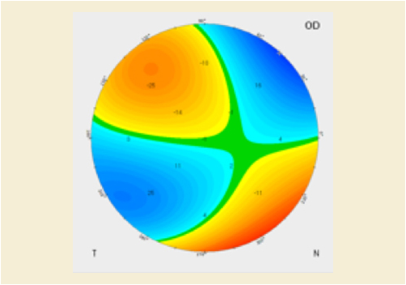

Ocular wavefront produces a measurement of optical path difference (OPD) between ideal optical system and the one being measured. Typically the OPD is measured and displayed in units of microns. Wavefront maps can be produced from the corneal surfaces, most often the front surface, since this is the major refracting surface in the eye account for about 80% of the ocular power.
Wavefront maps can be calculated directly from corneal elevation data most often using the Zernike polynomial fitting series. With this method, corneal optical characteristics such as astigmatism, spherical aberration, and coma can be calculated. Generally, the lower order (LO) aberrations (offsets, refractive error and prism) are eliminated from display, so that only the higher order (HO) aberrations remain, shown in Figure NNN.5-1.
|
|

|
Numbers indicate deviations from a perfect optical element.
Figure NNN.5-1. Corneal Axial Topography Map of keratoconus (left) with its Wavefront Map showing higher order (HO) aberrations (right)